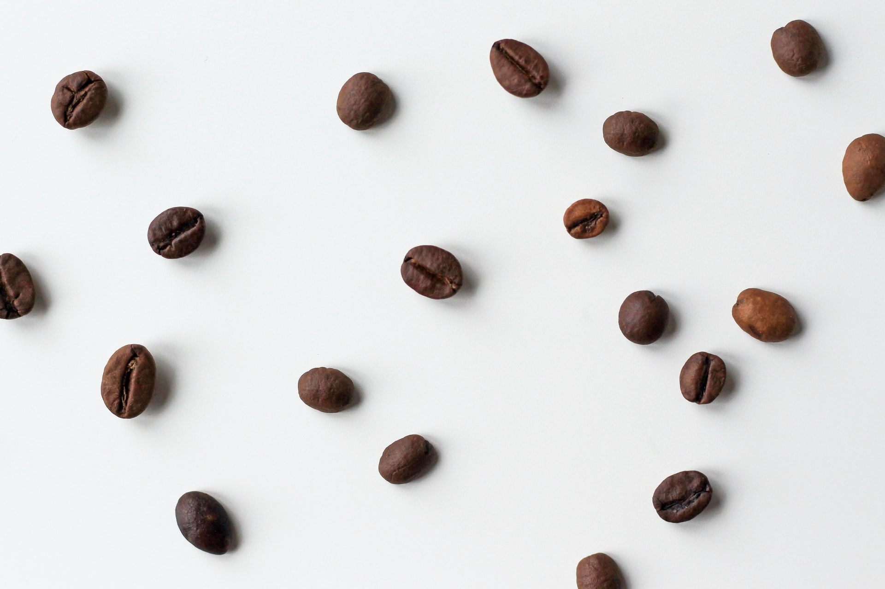

- 특징과 오해
- 역사
- 품종들
- 생산
- 세계 3대 커피?
- 가공 및 제조
- 추출 방법에 따른 커피 종류
- 즐기기 위한 팁과 맛
특징

가장 기초가 되는 맛은 쓴맛. 물론 다양한 기호에 맞게 각국의 커피 맛이 어느 정도 차이를 보이고 다른 대표적인 맛인 신맛을 포함해서 느껴지는 다른 맛과 향도 커피를 평가하는 데 있어 중요하게 여기지만 커피에게 쓴맛은 거의 기본이나 다름없게 여겨진다. 어찌 됐든 일반적인 기준에서 인간에게 좋은 경험이 아닌 맛들인 쓰고 신 커피가 인간이 가장 사랑하는 음료들 중 하나가 된 것은 실로 아이러니다. 종자를 수없이 털리긴 하지만 그 덕분에 원산지인 에티오피아를 벗어나 열대 전 각지로 널리 퍼져나가게 된 성공한 식물이 되었다.
이제는 김치보다도 커피를 더 많이 마신다는 한국에서는 간단하고 편리한 인스턴트 커피 또한 자주 마시기에 커피라고 하면 원두 커피 뿐만 아니라 인스턴트 커피도 함께 많이 연상한다. 일본에서도 비슷한 사정이라 원두 커피를 따로 레귤러 커피라고 구분해서 부르기도 한다. 반면 북미에서는 커피 하면 원두 커피를 의미한다. 터키, 그리스에서는 인스턴트 커피를 '네스카페'라고 부른다. 이쪽 상표가 워낙 유명해서 그런 듯.
미국에선 한 때 모든 종류의 커피를 그냥 '조(Joe)'라고 불렀으며, 이에 관해 한 잔의 커피란 뜻의 '한 컵의 조(a cup of joe)'라는 숙어도 있다. 지금도 간간이 쓰이는 표현인데, 1992년을 배경으로 한 영화 블랙 호크 다운을 보면 이완 맥그리거가 커피를 보고 '조'라고 부르는 장면도 있으며, 게임 배트맨: 아캄 시티에서도 도시를 돌아다니다 보면 라디오로 악당 똘마니가 추운 날씨에 커피 한 잔이 마시고 싶다며 위에서 말한 '한 컵의 조'를 언급하기도 한다. 그래서인지 요즘 레드넥들은 캘리포니아와 동부의 잘난 척하는 것들 때문에 이제 '조' 한잔 마시려면 이탈리아어를 해야 한다고 투덜거린다 카더라.
오해: 콩이 아니라 씨앗
영어권에서도 보리 알맹이를 닮은 커피 씨앗을 콩(bean)이라 부르지만 가공 과정을 볼 때 우리가 커피라 부르는 것은 생김새는 콩이나 실제로는 열매가 아니라 씨앗이다. 커피콩(coffee bean)이라는 것은 일종의 관용어인 셈이다. 실제로 커피는 꼭두서니과지만 콩은 콩과로 과가 다르다. 벽오동과 식물인 카카오의 종자를 '카카오 콩'이라 부르는 것도 마찬가지. 솔직히 커피든 콩이든 씨앗인 건 마찬가지지만. 애초에 워낙 오랫동안 그렇게 불러온데다 커피 문화가 넓게 퍼진 현대에는 어지간한 사람들은 전부 씨앗이라는 것 정도는 알고 있기에 별 문제도 안되긴 하다.
커피 열매는 커피체리라고 해서 아주 작은 체리나 버찌를 닮았다. 열매가 달리는 모양새는 앵두와도 비슷하다. 식용도 가능하며 맛은 새콤달콤하다. 하지만 모양새만 같을 뿐 체리든 버찌든 앵두든 커피와는 전혀 연관이 없다.
요약하면, 열매를 커피체리라고 하지만 체리가 아니고, 씨를 커피콩이라고 하지만 콩이 아니다.
powered by namuwiki